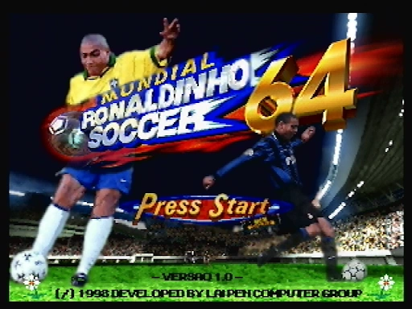

Videojuegos
Tales of Symphonia
Tales of Symphonia (テイルズ オブ シンフォニア Teiruzu obu Shinfonia?) es un RPG creado por Namco, perteneciente a la saga Tales, muy famosa en Japón. Tales of Symphonia está disponible para GameCube en Japón, Norteamérica y Europa. El juego fue relanzado para la consola PlayStation 2 únicamente en Japón, luego una versión HD para PC (steam). La historia se basa en la mitología nórdica y el juego puede durar más 100 horas debido a su elaborado argumento y a sus múltiples historias secundarias.
Más info

The Elder Scrolls V: Skyrim
The Elder Scrolls V: Skyrim es un ARPG del tipo mundo abierto desarrollado por Bethesda Game Studios y publicado por Bethesda Softworks. Skyrim es la quinta entrega de la serie The Elder Scrolls de videojuegos de acción y fantasía, y es posterior a The Elder Scrolls IV: Oblivion y predecesor de The Elder Scrolls Online. Skyrim salió a la venta el 11 de noviembre de 20111 para las plataformas: Microsoft Windows, Xbox 360 y PlayStation 3. El 26 de julio de 2012 fueron lanzados al mercado tres expansiones descargables: Dawnguard, Hearthfire y Dragonborn. El 28 de octubre de 2016 fue lanzada una remasterización llamada Skyrim Special Edition. Incluye el juego original y los complementos, así como nuevas características: gráficos y efectos renovados.
Más info

Digimon Story: Cyber Sleuth
Digimon Story: Cyber Sleuth (デジモンストーリー サイバースルゥース Dejimon Sutōrī: Saibā Surwūsu?) es un videojuego RPG de entrenamiento cyberpunk desarrollado por Media.Vision1 y publicado por Bandai Namco Games para PlayStation Vita y PlayStation 4. El videojuego fue lanzado en Japón el 12 de marzo de 2015, el 2 de febrero del 2016 en América, el 5 de febrero del 2016 en Europa (excepto España), y en España el 31 de marzo del 2016 solo en formato físico. En el 2019 se confirmó el lanzamiento de una edición completa en donde está incluida su secuela, para las plataformas de PC y Nintendo Switch.
Más info

Ori and the Blind Forest
Ori and the Blind Forest es un videojuego de plataforma aventura de un jugador con el estilo de Metroidvania diseñado por Moon Studios, un desarrollador independiente, y publicado por Microsoft Studios. El juego fue lanzado en 11 de marzo de 2015 y en solo 1 semana llegó al Millón de ventas por Microsoft Windows y Xbox One. Una nueva edición Ori and the Blind Forest: Definitive Edition se lanzó por Xbox One en 11 de marzo de 2016, y por Windows en 27 de abril de 2016. La Edición de Ori and the Blind Forest: Definitive Edition se lanzó para la consola Nintendo Switch en 27 de septiembre de 2019.
Más info

The Legend of Zelda: Twilight Princess
The Legend of Zelda: Twilight Princess (ゼルダの伝説でんせつトワイライトプリンセス Zeruda no Densetsu: Towairaito Purinsesu?, lit. «La Leyenda de Zelda: Princesa del Crepúsculo») es un videojuego de acción-aventura de 2006 desarrollado por la filial EAD y distribuido por Nintendo para las videoconsolas GameCube y Wii (2006). Es el decimotercer lanzamiento de la franquicia The Legend of Zelda y el undécimo juego de su línea principal.
Más info
